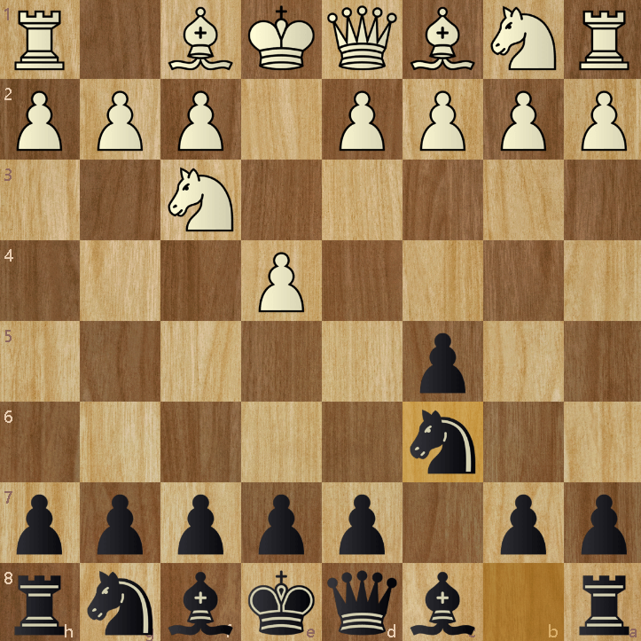
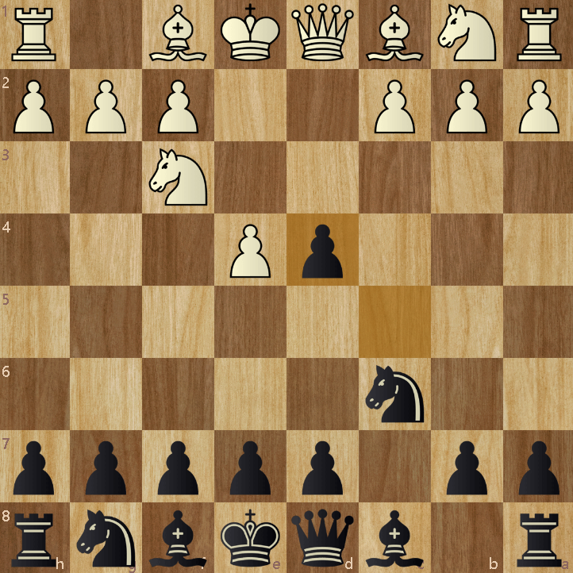

The Sicilian DefenseThe Sicilian Defense is a black opening which generally begins with 1. e4, c5 2. Nf3, Nc6. This is the beginning of the Sicilian Defense. Then if white were to play a common move d4, turning the game into a Open Sicilian, black should try to take d4 with the pawn, helping black gain more pawns in the centre for the midgame. Of course the Sicilian Defense is a lot more complex than this simple explaination, however using this may help you get a simple understanding of what the Sicilian Defense really is Have fun playing! |